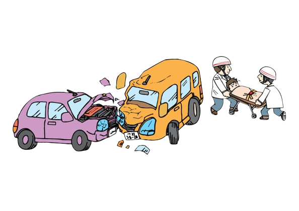

Projet Web - Accidents 2009
Crée à l'occasion d'un projet étudiant, ce site internet recense tous les accidents survenus en 2009. L'onglet visualisation permet
l'affichage des accidents de 2 manières différentes :
Dans un tableau Dans une carte
Dans l'onglet "Ajout", vous pouvez insérer un accident dans la base de données. De plus, grâce à plusieurs méthodes d'apprentissages,
une intelligence articficielle nous permet de prédire le cluster et la gravité d'un accident nouvellement recensé.

Educol.net - Image d'accident de la route